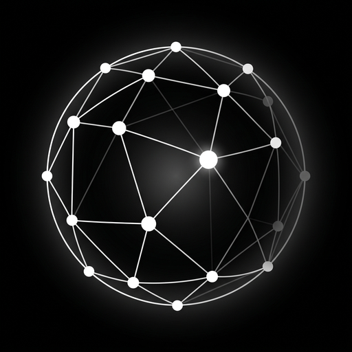

By using PrivaMesh you agree to these Terms. If you do not agree, do not use the app.
PrivaMesh enforces a ZERO-tolerance policy for objectionable, illegal, or abusive content and behaviour. You must not use PrivaMesh to:
Users who engage in such behaviour may be blocked by other users and reported.
PrivaMesh has no first-party account server. Messages are end-to-end encrypted and delivered over a public, decentralized transport. The developer has no access to your messages, contacts, or keys, and cannot recover, read, alter, or delete them.
You alone control your recovery phrase and keys. Losing your recovery phrase means permanently losing access to your account and messages. The developer cannot recover your account under any circumstances. Keep your recovery phrase safe and private.
PrivaMesh+ is an auto-renewable subscription billed through Apple. It can be managed or cancelled in your Apple account settings. Apple's terms apply to the purchase. In-App Purchases grant only a message allowance and membership perks; no cryptocurrency or digital asset is ever sold.
PrivaMesh is provided "as is", without warranties of any kind. To the maximum extent permitted by law, the developer is not liable for any loss of data or damages arising from your use of the app, including loss of your recovery phrase, failed or delayed delivery, or the actions of other users.
We may update these Terms. Continued use after changes constitutes acceptance.